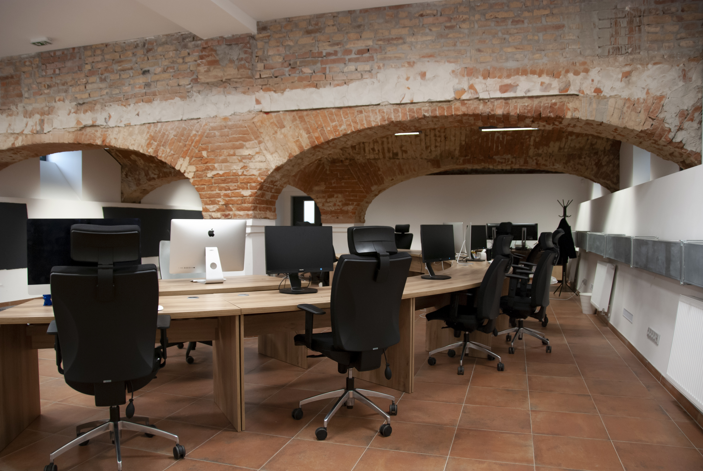

Smart City Hackathon
6. - 8. září, HUB 2.0
Město Plzeň má řadu zajímavých projektů, nápadů i problémů k řešení z všemožných oblastí, ale často nemá kapacitu, peníze, případnì odborníky na to tyto problémy řešit. Proto historicky poprvé pořádáme Smart City hackathon - víkendovou akci, na které Městu s řešením těchto témat můžete pomoci i vy.
Zveme věechny vývojáře, dataře, designéry, ale také odborníky z všemožných oblastí (UX, urbanistika, doprava, ...), kteří se nebojí obětovat jeden týden práci na městských tématech. Přidáte se?
Nechceme, aby byli účastníci motivováni finančně, i tak bychom vás ale za práci na projektech chtěli nějak odměnit, proto zařizujeme ke každému projektu za nejlépe vypracované řešení tématický zážitek. Konkrétní projekty ještě nebudeme prozrazovat, ale pokud by například jedno z témat bylo zadáno Čistou Plzní, odměnou by mohla být projížďka popelářským vozem.
Akce se uskuteční v nově rekonstruovaných prostorech naproti přes ulici od areálu DEPO2015. Na místě bude k dispozici občerstvení, hardware a všechno ostatní, co byste mohli k práci potřebovat.

HUB 2.0
Cukrovarská 3006/20,
Plzeň 3-Jižní Předměstí
Zobrazit na mapě
Hackathon organizuje SIT Port a TechHeaven.